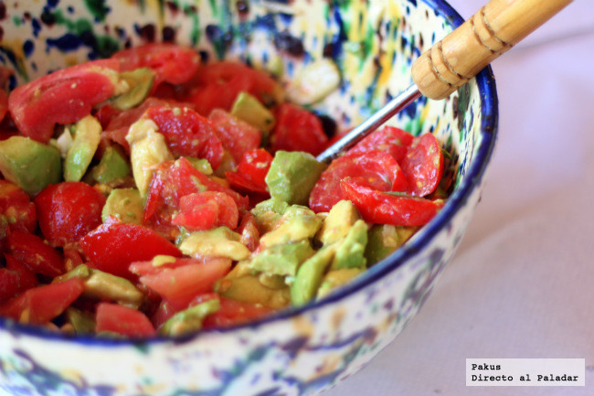

Ensalada de Aguacate y Tomate
Disfruta de una combinación irresistible de aguacate cremoso y tomate en esta refrescante ensalada. Con el toque especial del cilantro y el jugo de limón, cada cucharada es una explosión de sabores. ¡Ideal como acompañamiento o plato principal!

Ingredientes:
1 aguacate maduro
2 tomates medianos
1/4 de cebolla roja (opcional)
1/4 de taza de cilantro fresco picado
El jugo de 1 limón
2 cucharadas de aceite de oliva extra virgen
Sal y pimienta al gusto
Pasos:
1.Corta el aguacate por la mitad, retira el hueso y utiliza una cuchara para sacar la pulpa del aguacate. Corta la pulpa del aguacate en cubos medianos y colócalos en un tazón grande.
2.Lava los tomates y córtalos en cubos del mismo tamaño que el aguacate. Agrega los cubos de tomate al tazón con el aguacate.
3.Si deseas agregar cebolla roja a tu ensalada, córtala en rodajas finas y agrégala al tazón.
4.Agrega el cilantro picado al tazón con los demás ingredientes.
5.Exprime el jugo de limón sobre la ensalada para darle un toque de frescura y sabor.
6.Vierte el aceite de oliva sobre la ensalada.
7.Agrega sal y pimienta al gusto y mezcla todos los ingredientes suavemente para combinar los sabores.